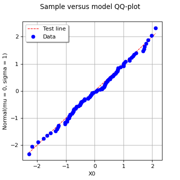

DrawQQplot¶
(Source code, png)
{kind=link}

- DrawQQplot(*args)¶
Draw a QQ-plot.
Refer to Using QQ-plot to compare two samples.
- Available usages:
VisualTest.DrawQQplot(sample1, sample2, n_points)
VisualTest.DrawQQplot(sample1, distribution);
- Parameters:
- sample1, sample22-d sequences of float
Tested samples.
- ditribution
Distribution Tested model.
- n_pointsint, optional
The number of points that is used for interpolating the empirical CDF of the two samples (with possibly different sizes).
It will default to DistributionImplementation-DefaultPointNumber from the
ResourceMap.
- Returns:
- graph
Graph The graph object
- graph
Notes
The QQ-plot is a visual fitting test for univariate distributions. It opposes the sample quantiles to those of the tested quantity (either a distribution or another sample) by plotting the following points cloud:
![\left(x^{(i)},
\theta\left(\widehat{F}\left(x^{(i)}\right)\right)
\right), \quad i = 1, \ldots, m]()
where
 denotes the empirical CDF of the (first) tested
sample and
denotes the empirical CDF of the (first) tested
sample and  denotes either the quantile function of the tested
distribution or the empirical quantile function of the second tested sample.
denotes either the quantile function of the tested
distribution or the empirical quantile function of the second tested sample.If the given sample fits to the tested distribution or sample, then the points should be close to be aligned (up to the uncertainty associated with the estimation of the empirical probabilities) with the first bissector whose equation reads:

Examples
>>> import openturns as ot >>> from openturns.viewer import View
Generate a random sample from a Normal distribution:
>>> ot.RandomGenerator.SetSeed(0) >>> distribution = ot.WeibullMin(2.0, 0.5) >>> sample = distribution.getSample(30) >>> sample.setDescription(['Sample'])
Draw a QQ-plot against a given (inferred) distribution:
>>> tested_distribution = ot.WeibullMinFactory().build(sample) >>> QQ_plot = ot.VisualTest.DrawQQplot(sample, tested_distribution) >>> View(QQ_plot).show()
Draw a two-sample QQ-plot:
>>> another_sample = distribution.getSample(50) >>> another_sample.setDescription(['Another sample']) >>> QQ_plot = ot.VisualTest.DrawQQplot(sample, another_sample) >>> View(QQ_plot).show()